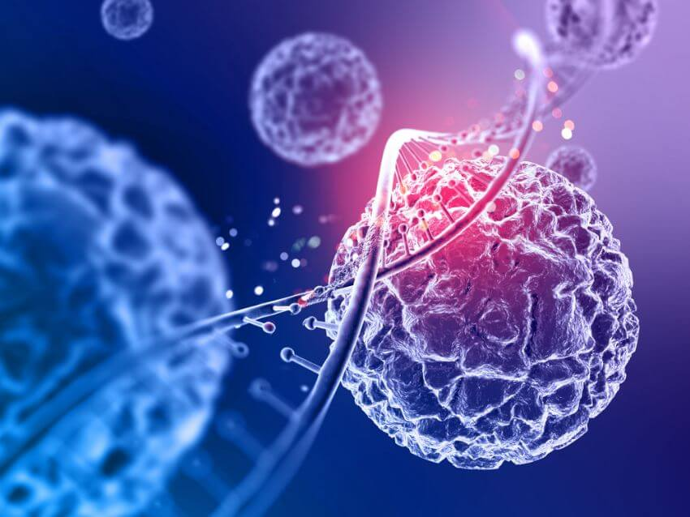

Ο σύγχρονος άνθρωπος αναζητά θαύματα για να πιστέψει στην ύπαρξη του δημιουργού Θεού. «Αν έβλεπα μπροστά μου ένα αληθινό θαύμα, τότε θα πίστευα και εγώ!» φωνάζει αλαζονικά. Άλλοι ισχυρίζονται ότι μπορούν να πιστέψουν μόνο σε κάτι το οποίο μπορούν να αγγίξουν και να μελετήσουν και με το οποίο μπορούν να πειραματιστούν.
Όπως όμως είχε πει και ο Αυγουστίνος:
«Οι άνθρωποι ταξιδεύουν για να θαυμάσουν τα ψηλά βουνά, τα κύματα της θάλασσας, τα βιαστικά ποτάμια, την απεραντοσύνη του ωκεανού, των αστεριών τη φωτεινή πορεία, και όμως τον εαυτό τους τον προσπερνούν χωρίς δεύτερη ματιά.»
Ο ανθρώπινος οργανισμός είναι από μόνος του ένα θαύμα. Ένα αριστούργημα της μηχανικής, της βιολογίας, της φυσικής και όλων των επιστημών. Από ένα αρχικό κύτταρο, το ζυγωτό, έχουμε με αλλεπάλληλες μιτωτικές διαιρέσεις τη δημιουργία του ανθρώπινου οργανισμού, που αποτελείται από τρισεκατομμύρια κύτταρα με διαφορετικά μορφολογικά και λειτουργικά χαρακτηριστικά. Και όμως όλα αυτά συνεργάζονται αρμονικά για να επιτελέσουν τις απαραίτητες λειτουργίες.
Κύτταρα μορφολογικά όμοια που συμμετέχουν στην ίδια λειτουργία αποτελούν ένα ιστό. Με τη σειρά τους διαφορετικοί ιστοί συνεργάζονται για τη δημιουργία ενός οργάνου και τέλος πολλά όργανα συμμετέχουν από κοινού και δημιουργούν το σύστημα οργάνων, το άθροισμα των οποίων αποτελεί τον ανθρώπινο οργανισμό.
Από τον μικρόκοσμο, όπου το DNA μέσα στον πυρήνα των κυττάρων «κατευθύνει» την πρωτεϊνοσύνθεση, μέχρι τον μακρόκοσμο, όπου ο μυς της καρδιάς χτυπά αδιάκοπα σαν μία τέλεια μηχανική τετράχωρη αντλία, ο θαυμαστός σχεδιασμός είναι εμφανής και η ενυπάρχουσα σοφία καθηλώνει ακόμη και τον πιο δύσπιστο.
Σκεφτείτε μόνο ότι:
Στον εγκέφαλο υπάρχουν περίπου 100 δισεκατομμύρια νευρώνες, οι νευρικές απολήξεις των οποίων έχουν συνολικό μήκος περίπου 2.000.000 χλμ. Θα μπορούσαμε με αυτές να τυλίξουμε τη Γη μας 50 φορές…
Η καρδιά κτυπά περίπου 100.000 φορές την ημέρα και αντλεί 13.000 λίτρα αίματος. Και αυτό το κάνει ακούραστα κάθε μέρα για όλη μας τη ζωή.
Στους πνεύμονες του ανθρώπου υπάρχουν 700 εκατομμύρια πνευμονικές κυψελίδες, οι οποίες έχουν συνολική επιφάνεια 70 τ.μ., όση περίπου και η επιφάνεια ενός γήπεδου αντισφαίρισης.
Ο βασιλιάς Δαβίδ, χωρίς να έχει τη γνώση της φυσιολογίας και ανατομίας που έχουμε εμείς σήμερα αλλά δια αποκαλύψεως του Πνεύματος Αγίου, αναφέρει στον Ψαλμό 119:14:
«Θέλω σε υμνεί, διότι φοβερώς και θαυμασίως επλάσθην· θαυμάσια είναι τα έργα σου·
και η ψυχή μου κάλλιστα γνωρίζει τούτο.»
Αν λοιπόν σήμερα αναζητάς ένα θαύμα της αγάπης του δημιουργού Θεού, το έχεις μπροστά σου. Είσαι εσύ! Αυτός που με τόση αγάπη και σοφία σε έπλασε επιποθεί μία καθημερινή σχέση αγάπης μαζί σου γιατί σε έπλασε με ένα και μοναδικό σκοπό…
«…διότι εδημιούργησα αυτούς διά την δόξαν μου, έπλασα αυτούς και έκαμα αυτούς.»
(Ησαΐας 43:7)
Ομάδα Χριστιανισμός και Επιστήμη
Δημοσιεύθηκε στη στήλη της ομάδας στην εφημερίδα «Χριστιανισμός», .